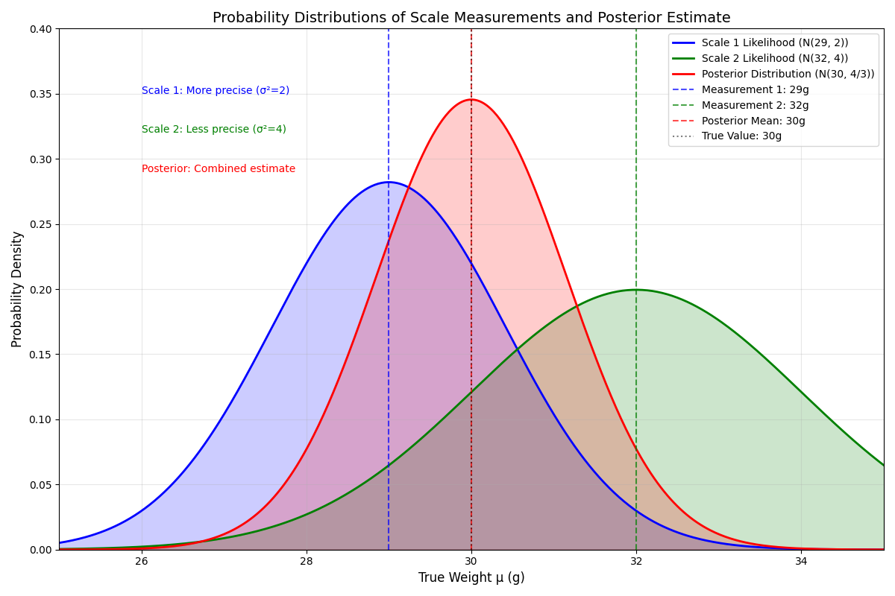

记录学习卡尔曼过程
BV1ez4y1X7eRhttps://blog.csdn.net/Poulen/article/details/147814529?spm=1001.2014.3001.5506 https://zhuanlan.zhihu.com/p/441182819
卡尔曼滤波
R. E. Kalman, "A New Approach to Linear Filtering and Prediction Problems," Journal of Basic Engineering, vol. 82, no. 1, pp. 35–45, 1960.
扩展卡尔曼滤波
A. Gelb (Ed.), "Applied Optimal Estimation," MIT Press, 1974.
误差状态卡尔曼滤波
M. S. Grewal and R. E. Kalman, "Estimating the state of a solid body in inertial space by error-state Kalman filtering," Proceedings of IEEE Conference on Decision and Control, 1969.
卡尔曼滤波器(Kalman Filter / KF)
卡尔曼滤波是感知中最广泛应用的算法，常用于多传感器数据融合
解算最优的传感器数据，为控制器提供精确可靠的状态量
工程中PX4飞控状态量的感知使用ESKF，方便调参使得无人机飞行稳定
Kalman Filter（卡尔曼滤波器）FK
基础，仅适用于理想的线性系统（GPS+光流）
Extended Kalman Filter（扩展卡尔曼滤波器）EKF
通过线性化处理轻度非线性问题，是应用最广泛的非线性滤波器（GPS+IMU）
Error-State Kalman Filter（误差状态卡尔曼滤波器）ESKF
仅对误差状态滤波，擅长处理包含旋转角等强非线性的状态估计（GPS+IMU）
Error-State Iterated Kalman Filter（误差状态迭代卡尔曼滤波器）ESIKF
在ESKF基础上引入迭代优化，以计算量为代价换取最高的估计精度（slam）
引言：卡尔曼滤波的思想
平均滤波
x ^ k = 1 k ∑ i = 1 k z i \hat{x}_k = \frac{1}{k} \sum_{i=1}^k z_i x ^ k = k 1 i = 1 ∑ k z i
根据您的查询，我将推导第 k k k x ^ k \hat{x}_k x ^ k k − 1 k-1 k − 1 x ^ k − 1 \hat{x}_{k-1} x ^ k − 1 x x x i i i z i z_i z i i = 1 , 2 , … , k i = 1, 2, \ldots, k i = 1 , 2 , … , k x ^ k \hat{x}_k x ^ k k k k x ^ k = 1 k ∑ i = 1 k z i \hat{x}_k = \frac{1}{k} \sum_{i=1}^{k} z_i x ^ k = k 1 ∑ i = 1 k z i
定义第 k − 1 k-1 k − 1 x ^ k − 1 = 1 k − 1 ∑ i = 1 k − 1 z i \hat{x}_{k-1} = \frac{1}{k-1} \sum_{i=1}^{k-1} z_i x ^ k − 1 = k − 1 1 i = 1 ∑ k − 1 z i k − 1 k-1 k − 1 ∑ i = 1 k − 1 z i = ( k − 1 ) x ^ k − 1 \sum_{i=1}^{k-1} z_i = (k-1) \hat{x}_{k-1} i = 1 ∑ k − 1 z i = ( k − 1 ) x ^ k − 1
表达第 k k k x ^ k = 1 k ∑ i = 1 k z i = 1 k ( ∑ i = 1 k − 1 z i + z k ) \hat{x}_k = \frac{1}{k} \sum_{i=1}^{k} z_i = \frac{1}{k} \left( \sum_{i=1}^{k-1} z_i + z_k \right) x ^ k = k 1 i = 1 ∑ k z i = k 1 ( i = 1 ∑ k − 1 z i + z k ) x ^ k = 1 k ( ( k − 1 ) x ^ k − 1 + z k ) \hat{x}_k = \frac{1}{k} \left( (k-1) \hat{x}_{k-1} + z_k \right) x ^ k = k 1 ( ( k − 1 ) x ^ k − 1 + z k )
简化表达式x ^ k = k − 1 k x ^ k − 1 + 1 k z k \hat{x}_k = \frac{k-1}{k} \hat{x}_{k-1} + \frac{1}{k} z_k x ^ k = k k − 1 x ^ k − 1 + k 1 z k x ^ k = x ^ k − 1 + 1 k ( z k − x ^ k − 1 ) \hat{x}_k = \hat{x}_{k-1} + \frac{1}{k} (z_k - \hat{x}_{k-1}) x ^ k = x ^ k − 1 + k 1 ( z k − x ^ k − 1 )
令卡尔曼增益 K k = 1 k K_k = \frac{1}{k} K k = k 1
x ^ k = x ^ k − 1 + K k ( z k − x ^ k − 1 ) \hat{x}_k = \hat{x}_{k-1} + K_k (z_k - \hat{x}_{k-1}) x ^ k = x ^ k − 1 + K k ( z k − x ^ k − 1 ) 其中 K k = 1 k K_k = \frac{1}{k} K k = k 1
解释公式
当前估计值 x ^ k \hat{x}_k x ^ k 上次估计值 x ^ k − 1 \hat{x}_{k-1} x ^ k − 1 卡尔曼增益 K k K_k K k 当前测量值 z k z_k z k 上次估计值 x ^ k − 1 \hat{x}_{k-1} x ^ k − 1
当 k k k k = 1 k=1 k = 1 ：K k = 1 k = 1 K_k = \frac{1}{k} = 1 K k = k 1 = 1 x ^ k = z k \hat{x}_k = z_k x ^ k = z k
当 k k k k → ∞ k \to \infty k → ∞ ：K k = 1 k → 0 K_k = \frac{1}{k} \to 0 K k = k 1 → 0 x ^ k ≈ x ^ k − 1 \hat{x}_k \approx \hat{x}_{k-1} x ^ k ≈ x ^ k − 1
Eg:假设有两个称(方差分别为2g和4g)，称30g物体，结果z 1 = 29 g z_1= 29g z 1 = 29 g z 2 = 32 g z_2= 32g z 2 = 32 g

求最小方差的估计，可以写为卡尔曼增益的形式
同理，卡尔曼系数如下K k = P k − H T ( H P k − H T + R ) − 1 K_k = P^{-}_k H^T (H P^{-}_k H^T + R)^{-1} K k = P k − H T ( H P k − H T + R ) − 1
GPS测量加速汽车的卡尔曼滤波
状态空间模型推导
状态向量定义
对于匀加速运动的汽车，我们定义状态向量为：x = [ p v ] \mathbf{x} = \begin{bmatrix} p \\ v \end{bmatrix} x = [ p v ]
状态空间方程（过程模型）
根据匀加速运动学方程，并考虑加速度的影响：
p k + 1 = p k + v k Δ t + 1 2 a Δ t 2 p_{k+1} = p_k + v_k \Delta t + \frac{1}{2} a \Delta t^2 p k + 1 = p k + v k Δ t + 2 1 a Δ t 2 v k + 1 = v k + a Δ t v_{k+1} = v_k + a \Delta t v k + 1 = v k + a Δ t
由于加速度 a a a x k + 1 = F x k + G a + w k \mathbf{x}_{k+1} = F \mathbf{x}_k + G a + \mathbf{w}_k x k + 1 = F x k + G a + w k
状态转移矩阵 F F F F = [ 1 Δ t 0 1 ] F = \begin{bmatrix}
1 & \Delta t \\
0 & 1
\end{bmatrix} F = [ 1 0 Δ t 1 ]
控制矩阵 G G G G = [ 1 2 Δ t 2 Δ t ] G = \begin{bmatrix}
\frac{1}{2} \Delta t^2 \\
\Delta t
\end{bmatrix} G = [ 2 1 Δ t 2 Δ t ]
w ∼ N ( 0 , Q ) \mathbf{w} \sim N(0, Q) w ∼ N ( 0 , Q )
测量方程（观测模型）
假设GPS仅测量位置 p p p z k = H x k + v k z_k = H \mathbf{x}_k + v_k z k = H x k + v k
H = [ 1 0 ] H = \begin{bmatrix} 1 & 0 \end{bmatrix} H = [ 1 0 ] v ∼ N ( 0 , R ) v \sim N(0, R) v ∼ N ( 0 , R )
卡尔曼滤波公式
Q : 过程噪声协方差矩阵，汽车路上有颠簸 R : 测量噪声协方差矩阵，GPS测量误差
预测步骤（忽略误差）
由状态空间方程推导,忽略误差，状态预测：x ^ k − = F x ^ k − 1 + G a \hat{\mathbf{x}}^{-}_k = F \hat{\mathbf{x}}_{k-1} + G a x ^ k − = F x ^ k − 1 + G a
推导略，用于K k K_k K k P k − = F P k − 1 F T + Q P^{-}_k = F P_{k-1} F^T + Q P k − = F P k − 1 F T + Q
更新步骤（K k K_k K k
最小协方差的K k K_k K k K k = P k − H T ( H P k − H T + R ) − 1 K_k = P^{-}_k H^T (H P^{-}_k H^T + R)^{-1} K k = P k − H T ( H P k − H T + R ) − 1
引入测量值z k z_k z k x ^ k = x ^ k − + K k ( z k − H x ^ k − ) \hat{\mathbf{x}}_k = \hat{\mathbf{x}}^{-}_k + K_k (z_k - H \hat{\mathbf{x}}^{-}_k) x ^ k = x ^ k − + K k ( z k − H x ^ k − )
当前估计值 x ^ k \hat{x}_k x ^ k 先验估计值 x ^ k − \hat{\mathbf{x}}^{-}_k x ^ k − 卡尔曼增益 K k K_k K k 当前测量值 z k z_k z k 先验估计值 Hx ^ k − \hat{\mathbf{x}}^{-}_k x ^ k −
引入测量值z k z_k z k P k = ( I − K k H ) P k − P_k = (I - K_k H) P^{-}_k P k = ( I − K k H ) P k −
基于雷达测量的匀速目标EKF跟踪
EKF针对非线性系统进行线性化
我们有一个雷达传感器，可以测量目标的：
径向距离 r r r
方位角度 θ \theta θ
径向速度 v r v_r v r
我们需要在二维直角坐标系下跟踪一个匀速运动的目标。
状态空间模型
状态向量定义
在直角坐标系下，我们定义状态向量为：x = [ x y v x v y ] \mathbf{x} = \begin{bmatrix} x \\ y \\ v_x \\ v_y \end{bmatrix} x = x y v x v y
x , y x, y x , y v x , v y v_x, v_y v x , v y
过程模型（状态转移）
对于匀速运动的目标，状态转移方程为：x k + 1 = F x k + w k \mathbf{x}_{k+1} = F \mathbf{x}_k + \mathbf{w}_k x k + 1 = F x k + w k F F F F = [ 1 0 Δ t 0 0 1 0 Δ t 0 0 1 0 0 0 0 1 ] F = \begin{bmatrix}
1 & 0 & \Delta t & 0 \\
0 & 1 & 0 & \Delta t \\
0 & 0 & 1 & 0 \\
0 & 0 & 0 & 1
\end{bmatrix} F = 1 0 0 0 0 1 0 0 Δ t 0 1 0 0 Δ t 0 1 w k \mathbf{w}_k w k N ( 0 , Q ) N(0, Q) N ( 0 , Q )
测量模型
雷达测量值为：z k = [ r θ v r ] = h ( x k ) + v k \mathbf{z}_k = \begin{bmatrix} r \\ \theta \\ v_r \end{bmatrix} = h(\mathbf{x}_k) + \mathbf{v}_k z k = r θ v r = h ( x k ) + v k h ( x k ) h(\mathbf{x}_k) h ( x k ) h ( x k ) = [ x k 2 + y k 2 arctan ( y k x k ) x k v x , k + y k v y , k x k 2 + y k 2 ] h(\mathbf{x}_k) = \begin{bmatrix}
\sqrt{x_k^2 + y_k^2} \\
\arctan\left(\frac{y_k}{x_k}\right) \\
\frac{x_k v_{x,k} + y_k v_{y,k}}{\sqrt{x_k^2 + y_k^2}}
\end{bmatrix} h ( x k ) = x k 2 + y k 2 arctan ( x k y k ) x k 2 + y k 2 x k v x , k + y k v y , k v k \mathbf{v}_k v k N ( 0 , R ) N(0, R) N ( 0 , R )
扩展卡尔曼滤波(EKF)公式
预测步骤
状态预测：x ^ k − = F x ^ k − 1 \hat{\mathbf{x}}^{-}_k = F \hat{\mathbf{x}}_{k-1} x ^ k − = F x ^ k − 1
误差协方差预测：P k − = F P k − 1 F T + Q P^{-}_k = F P_{k-1} F^T + Q P k − = F P k − 1 F T + Q
更新步骤
计算雅可比矩阵 H k H_k H k
注意下标k（在 x ^ k − \hat{\mathbf{x}}^{-}_k x ^ k − H k H_k H k
H k = ∂ h ∂ x ∣ x = x ^ k − H_k = \frac{\partial h}{\partial \mathbf{x}} \Big|_{\mathbf{x} = \hat{\mathbf{x}}^{-}_k} H k = ∂ x ∂ h x = x ^ k −
雅可比矩阵的具体形式为：H k = [ x x 2 + y 2 y x 2 + y 2 0 0 − y x 2 + y 2 x x 2 + y 2 0 0 v x r − x v r r 2 v y r − y v r r 2 x r y r ] H_k = \begin{bmatrix}
\frac{x}{\sqrt{x^2+y^2}} & \frac{y}{\sqrt{x^2+y^2}} & 0 & 0 \\
-\frac{y}{x^2+y^2} & \frac{x}{x^2+y^2} & 0 & 0 \\
\frac{v_x r - x v_r}{r^2} & \frac{v_y r - y v_r}{r^2} & \frac{x}{r} & \frac{y}{r}
\end{bmatrix} H k = x 2 + y 2 x − x 2 + y 2 y r 2 v x r − x v r x 2 + y 2 y x 2 + y 2 x r 2 v y r − y v r 0 0 r x 0 0 r y r = x 2 + y 2 r = \sqrt{x^2+y^2} r = x 2 + y 2 v r = x v x + y v y r v_r = \frac{x v_x + y v_y}{r} v r = r x v x + y v y
卡尔曼增益计算：K k = P k − H k T ( H k P k − H k T + R ) − 1 K_k = P^{-}_k H_k^T (H_k P^{-}_k H_k^T + R)^{-1} K k = P k − H k T ( H k P k − H k T + R ) − 1
状态更新：x ^ k = x ^ k − + K k ( z k − h ( x ^ k − ) ) \hat{\mathbf{x}}_k = \hat{\mathbf{x}}^{-}_k + K_k (\mathbf{z}_k - h(\hat{\mathbf{x}}^{-}_k)) x ^ k = x ^ k − + K k ( z k − h ( x ^ k − ))
误差协方差更新：P k = ( I − K k H k ) P k − P_k = (I - K_k H_k) P^{-}_k P k = ( I − K k H k ) P k −
ESKF原理
在现代的大多数IMU系统中，人们往往使用误差状态卡尔曼滤波器（Error state Kalman filter, ESKF）而非原始状态的卡尔曼滤波器。大部分基于滤波器的LIO或VIO实现中，都使用ESKF作为状态估计方法。相比于传统KF，ESKF的优点可以总结如下：
在旋转的处理上，ESKF的状态变量可以采用最小化的参数表达，也就是使用三维变量来表达旋转的增量。而传统KF需要用到四元数（4维）或者更高维的表达（旋转矩阵，9维），要不就得采用带有奇异性的表达方式（欧拉角）。
ESKF总是在原点附近，离奇异点较远，并且也不会由于离工作点太远而导致线性化近似不够的问题。
ESKF的状态量为小量，其二阶变量相对来说可以忽略。同时大多数雅可比矩阵在小量情况下变得非常简单，甚至可以用单位阵代替。
误差状态的运动学也相比原状态变量要来得更小，因为我们可以把大量更新部分放到原状态变量中。
在ESKF中，我们通常把原状态变量称为名义状态变量（nominal state），然后把ESKF里的状态变量称为误差状态变量（error state）。ESKF整体流程如下：当IMU测量数据到达时，我们把它积分后，放入名义状态变量中。由于这种做法没有考虑噪声，其结果自然会快速漂移，于是我们希望把误差部分作为误差变量，放在ESKF中。ESKF内部会考虑各种噪声和零偏的影响，并且给出误差状态的一个高斯分布描述。同时，ESKF本身作为一种卡尔曼滤波器，也具有预测过程和修正过程，其中修正过程需要依赖IMU以外的传感器观测。当然，在修正之后，ESKF可以给出后验的误差高斯分布，随后我们可以把这部分误差放入名义状态变量中，并把ESKF置零，这样就完成了一次循环。
ESKF 符号化推导（简洁版）
1. 状态分解
真实状态与名义状态：
x t = x ^ ⊕ δ x x_t = \hat{x} \oplus \delta x x t = x ^ ⊕ δ x
其中
x t x_t x t x ^ \hat{x} x ^ δ x \delta x δ x ⊕ \oplus ⊕
2. 系统状态方程和观测方程
2.1 名义状态非线性系统方程
x ^ ˙ = f ( x ^ , u , 0 ) (1) \dot{\hat{x}} = f(\hat{x}, u, 0)\tag{1} x ^ ˙ = f ( x ^ , u , 0 ) ( 1 )
2.2 误差状态系统方程（线性化）
误差满足近似线性系统：
δ x ˙ = F δ x + G w (2) \delta\dot{x} = F \, \delta x + G \, w\tag{2} δ x ˙ = F δ x + G w ( 2 )
其中
F = ∂ f ∂ x ∣ x ^ , u F = \left.\frac{\partial f}{\partial x}\right|_{\hat{x},u} F = ∂ x ∂ f x ^ , u G = ∂ f ∂ w ∣ x ^ , u G = \left.\frac{\partial f}{\partial w}\right|_{\hat{x},u} G = ∂ w ∂ f x ^ , u w w w
离散化
在采样间隔 Δ t \Delta t Δ t
δ x k ≈ Φ δ x k − 1 + w d − 1 (3) \delta x_{k} \approx \Phi \, \delta x_{k-1} + w_{d-1}\tag{3} δ x k ≈ Φ δ x k − 1 + w d − 1 ( 3 )
Φ = e F Δ t \Phi = e^{F \Delta t} Φ = e F Δ t Q d = ∫ 0 Δ t e F τ G Q c G ⊤ e F ⊤ τ d τ Q_d = \int_0^{\Delta t} e^{F\tau} G Q_c G^\top e^{F^\top \tau} d\tau Q d = ∫ 0 Δ t e F τ G Q c G ⊤ e F ⊤ τ d τ
2.3 观测方程
是对误差状态的观测而不是测量值的观测，故同理进行分解
z t = h ( x t ) + v (4) z_t = h(x_t) + v\tag{4} z t = h ( x t ) + v ( 4 )
观测残差（innovation / residual），可以理解为是观测误差方程：
δ y k ≡ z t k − z k ^ = z t k − h ( x k ^ ) ≈ H k δ x k + v k (5) \delta y_k \equiv z_{tk} - \hat{z_k} = z_{tk} - h(\hat{x_k}) \approx H_k \delta x_k + v_k\tag{5} δ y k ≡ z t k − z k ^ = z t k − h ( x k ^ ) ≈ H k δ x k + v k ( 5 )
其中H k = ∂ h ∂ x k ∣ x k ^ H_k = \left.\frac{\partial h}{\partial x_k}\right|_{\hat{x_k}} H k = ∂ x k ∂ h x k ^
4. 预测（Predict）
公式(3)进行预测，误差状态先验：
δ x ^ k ∣ k − 1 = Φ δ x ^ k − 1 ∣ k − 1 (6) \hat{\delta x}_{k|k-1} = \Phi \hat{\delta x}_{k-1|k-1}\tag{6} δ x ^ k ∣ k − 1 = Φ δ x ^ k − 1∣ k − 1 ( 6 )
误差状态协方差先验：
P k ∣ k − 1 = Φ P k − 1 ∣ k − 1 Φ ⊤ + Q d (7) P_{k|k-1} = \Phi P_{k-1|k-1} \Phi^\top + Q_d\tag{7} P k ∣ k − 1 = Φ P k − 1∣ k − 1 Φ ⊤ + Q d ( 7 )
公式(1)，名义状态先验：
x ^ k ∣ k − 1 = f d ( x ^ k − 1 ∣ k − 1 , u k ) (8) \hat{x}_{k|k-1} = f_d(\hat{x}_{k-1|k-1}, u_k)\tag{8} x ^ k ∣ k − 1 = f d ( x ^ k − 1∣ k − 1 , u k ) ( 8 )
7. 更新（Update）
卡尔曼增益：
K = P H ⊤ ( H P H ⊤ + R ) − 1 (9) K = P H^\top (H P H^\top + R)^{-1}\tag{9} K = P H ⊤ ( H P H ⊤ + R ) − 1 ( 9 )
误差估计：
δ x ^ k ∣ k = K y (10) \hat{\delta x}_{k|k} = K y\tag{10} δ x ^ k ∣ k = Ky ( 10 ) δ x ^ k ∣ k = δ x ^ k ∣ k − 1 + K ( y − H δ x ^ k ∣ k − 1 ) \hat{\delta x}_{k|k} = \hat{\delta x}_{k|k-1} + K (y-H \hat{\delta x}_{k|k-1} ) δ x ^ k ∣ k = δ x ^ k ∣ k − 1 + K ( y − H δ x ^ k ∣ k − 1 ) δ x ^ k ∣ k − 1 = 0 \hat{\delta x}_{k|k-1} = 0 δ x ^ k ∣ k − 1 = 0
误差状态协方差后验：
P k ∣ k = ( I − K H ) P k ∣ k − 1 (11) P_{k|k} = (I - K H) P_{k|k-1}\tag{11} P k ∣ k = ( I − KH ) P k ∣ k − 1 ( 11 )
8. 注入与复位（Injection & Reset）
将误差注入回名义状态，名义状态后验：
x ^ k ∣ k = x ^ k ∣ k − 1 ⊕ δ x ^ k ∣ k (12) \hat{x}_{k|k} = \hat{x}_{k|k-1} \oplus \hat{\delta x}_{k|k}\tag{12} x ^ k ∣ k = x ^ k ∣ k − 1 ⊕ δ x ^ k ∣ k ( 12 )
误差状态重置为零：
δ x ^ k ∣ k = 0 (13) \hat{\delta x}_{k|k} = 0\tag{13} δ x ^ k ∣ k = 0 ( 13 )
协方差变换：
P k + 1 ∣ k = G inj P k ∣ k G inj ⊤ (14) P_{k+1|k} = G_{\text{inj}} P_{k|k} G_{\text{inj}}^\top\tag{14} P k + 1∣ k = G inj P k ∣ k G inj ⊤ ( 14 )
其中 G inj G_{\text{inj}} G inj